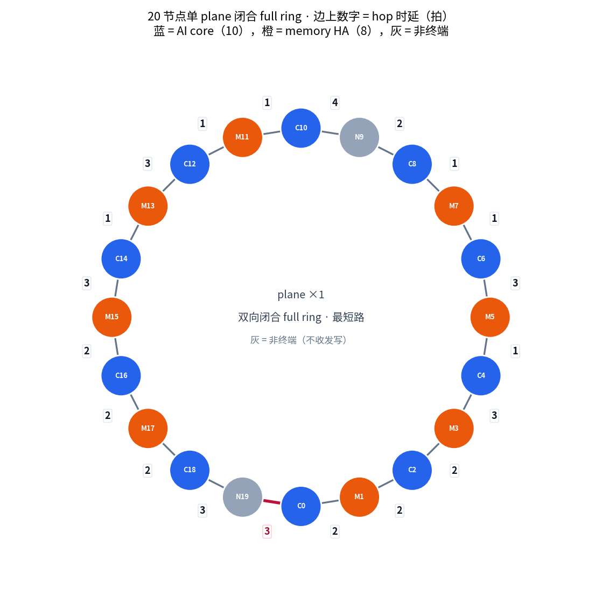
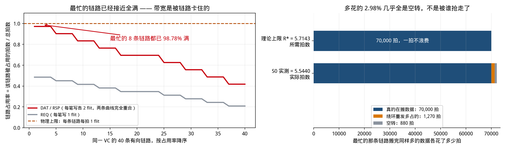
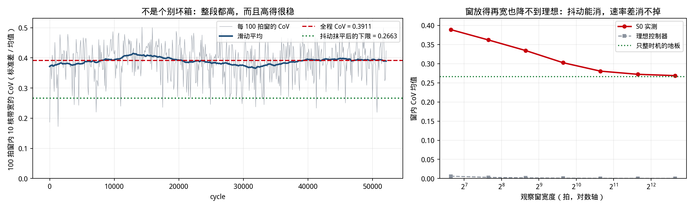
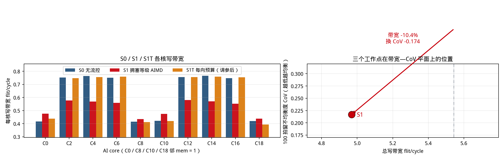
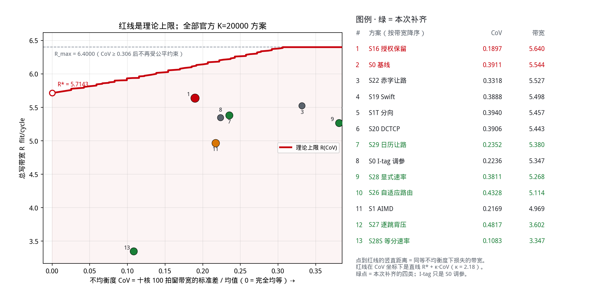
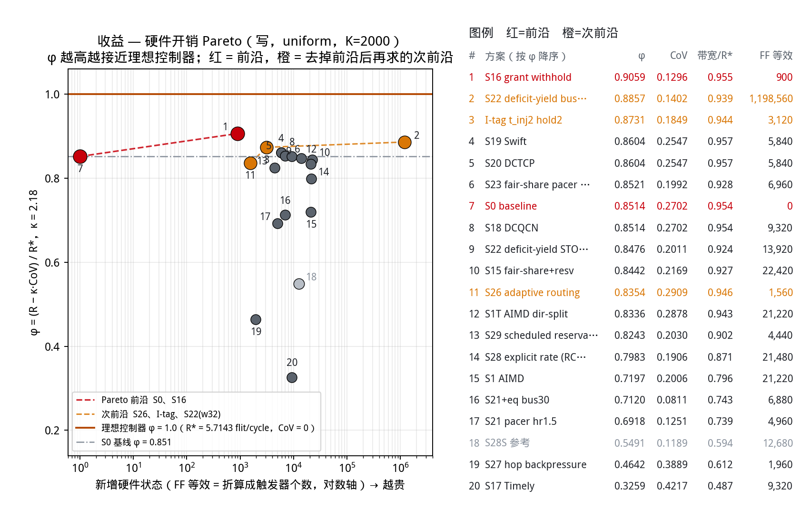
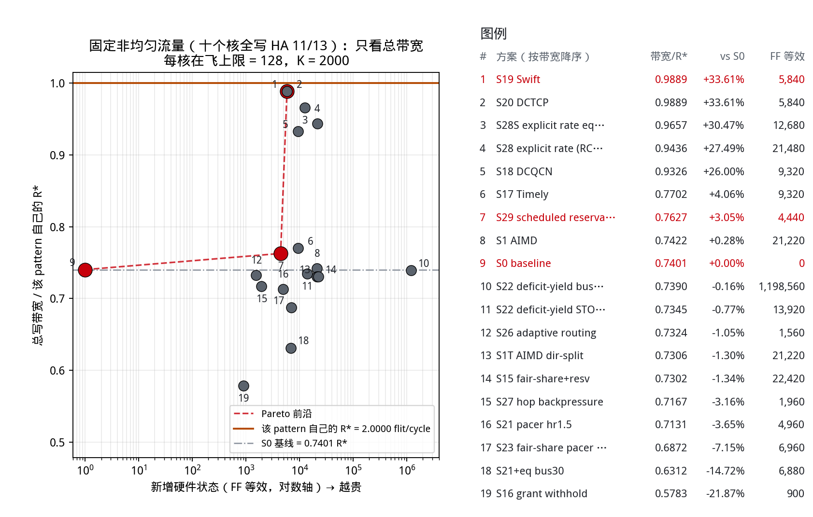

研究问题：无缓存环接近 R* 时，几何造成的六快四慢
能否在不牺牲总带宽的前提下被控制器抹平？
拓扑、节点角色、路由规则，以及决定结论的那几项关键 setup。

10 个 AI core（C0–C18 偶数）发起写；8 个 memory HA（M1–M17 奇数）为 completer；N9 / N19 只转发，不收发。
按链路时延之和选 CW / CCW，时延平局比跳数，再平局取 CW；core→mem 与 mem→core 同一规则。
因为 N9 / N19 不是 mem，C0 / C8 / C10 / C18 的「邻接 mem 数」只有 1，其余六核为 2。
1 plane，双向闭合
core / HA / 非终端
等速率理论上限
core → HA，1 flit，走时延最短方向，占 REQ VC。
HA → core，1 flit，反方向，占 RSP VC。HA think time = 0。
core → HA，2 flit，占 DAT VC。per-core 写带宽 = 争用窗内成功上环的 WriteData flit / cycle。
HA → core，1 flit，占 RSP VC，释放该笔事务的 tracker 表项。
每方向一组 × REQ / RSP / DAT，每口 1 flit/cycle → 每节点 6 个上环口。
每 (node, VC) 一个「两写一读」buffer：两方向可同拍各写 1 flit，PE 每拍只读 1 flit。
每 (node, VC) 12 深共享 FIFO + 每向 8 深 inject Q，各接一个上环口。
深度 12。DAT 侧平均占用 0.765 / 12（峰值 11），满的比例 0%，从来不是瓶颈。
bufferless：transit flit 永不被本地注入打断，注入只能挤空隙。
t_inj = 16、hold = 8 定向上游预约单槽；t_xfer = 1，首次下环失败即打标，再到达时最高优先级下环。
core_outstanding = 128；HA tracker = 512，峰值占用 422，重试 0 —— 已完全不绑定。
广播，不占 NoC hop；任何使用固定 30 拍延迟（硬约束），控制窗 64 拍。
总带宽已经打到理论上限的 95.69%，但十个核的瞬时带宽差 1.69 倍。

makespan 73,152 = 70,000 名义载荷 + 1,056 绕环加价 + 2,096 空转，三项相加逐拍相等。绑定项是 RSP 链路而不是 DAT。
恰恰是不公平的证据：领先核提前做完退出，尾部核独占剩下的容量，所以窗内瞬时值高于严格等速率上限。
留给拥塞控制去争的总带宽只有 0.8 个点 —— 带宽线应当靠「不弄丢」而不是「抬上去」来过。
最低 C8 = 0.42409，最高 C14 = 0.71803。慢的那四个正是「邻接 mem 数 = 1」的 C0 / C8 / C10 / C18。

1,114 个箱里 p05 = 0.82121，最差箱 0.72226；右图显示只有把观察窗放宽到 2¹¹ 拍量级，max/min 才收敛。
给每核每箱都填上它自己的长期均值（只留速率差），Jain 上限就到顶了 —— 这是任何「只整时机、不搬份额」机制的天花板。
核间长期速率 21.201 vs 35.901（比 1.6934）。核内抖动虽占方差 65.4%，但封顶的恰恰是那 34.6% 的核间差 —— 50 拍窗内每核只有 30.1 个 flit。
N9 / N19 是非终端，于是 C0 / C8 / C10 / C18 紧邻的 memory 只有一个。它们的写必须挤到环上最忙的那几条 hop 上，而其余六核可以在两侧分流。
带宽与邻接 mem 数的相关系数 0.997。这不是路由问题：改路由也变不出第二个邻居。
无缓存环上 transit flit 永不被本地注入打断，注入只能挤空隙。决定上环延迟的是空隙的分布而不是总量 —— 坐在热段起点的节点看到的空隙最少、最不规则。
官方 run 最忙 hop 占用 95.83%（DAT）/ 97.14%（RSP）；K=2000 短探测把绑定 hop 的空槽逐拍分类，「端口空闲」一列合计 1，实质为零 —— 没有一个空槽是仲裁失误。
这四个核的 CW / CCW 上环失败比 2.42–2.58，其余六核只有 1.01–1.18。而每核每方向成功上环数被路由钉死在 30,000 笔，逐位相同。
失败比不对称是在忠实报告「一个方向的 hop 更挤」，抹平它本身不是目标。
拥塞检测、拥塞传递、拥塞反馈、流量控制，以及调参之后的两难。
每节点每 64 拍窗统计上环失败与下环偏转，分 total（任何原因）与 net（仅在环占用造成）两路。
等级 = min(7, 计数 ÷ 8)，量化成 3 bit：0–7→0，8–15→1，…，≥56→7。
每方向 3 bit 的专用广播总线，从不占用 NoC hop，因此不会自我加剧拥塞。
本设计里任何总线使用固定 30 拍延迟；30 < 窗口 64，所以反馈仍能赶在下一次 AIMD 之前送到。
每节点维护一张受控节点表 —— 自己的 flit 会经过的那些 path nodes（20 项 × 6 bit）。
反馈值取这些节点等级的 max：路径上最堵的那一段说了算。
最终等级 = level_of(自身 total 失败 − 8 × 收到的 max net 等级)。
对每窗整型注入预算做 AIMD：乘性减 α = 0.75 / 0.5 / 0.25，加性增 β = +16 / +8 / +2，出口是令牌桶闸门。

分箱 Jain 0.87865 → 0.94689，整窗 max/min 1.6931 → 1.4161；总写带宽 5.4681 → 4.6874（−14.3%）。公平性进步是真的，带宽代价也是真的。
62 组 AIMD 参数网格自己选出的最优点（dir_split、cap 0.5、w 64、burst 1）：带宽回到 5.4641（−0.07%），但 Jain 掉回 0.87294，max/min 反升到 1.7879。
最坏核的 CW/CCW 失败比 S0 = 2.575、S1 = 2.463、S1T = 2.551，三者实质相同。能压到 2.2 以下的配置一律要付 36–37% 带宽 —— 那是关机，不是调平。
极差变小，是因为上限被砍、下限也跟着掉，而不是速率发生了转移。
拥塞等级高的路径上，占优核先降预算。
C0 / C8 / C10 / C18 拿到本来挤不上的 hop。
份额重新分配，总带宽守恒。
乘性减由「自己上环失败了」触发，而无缓存环上这些失败大多是别人的 transit 造成的 —— 等于惩罚受害者。
慢核 C18 0.43642 → 0.39489（−9.5%），快核 C2 0.71521 → 0.54571（−23.7%）。max/min 变好，是上限被砍出来的。
令牌桶「没额度就不上环」，而无缓存环上让出的槽不会被记账保留：它顺着环走，沿途任何节点都能吃掉。
默认 S1 的总写带宽代价
AIMD 参数扫描，无一双线达标
S1 硬件 FF-eq（总线 + 20 项表 + 乘法器 + 令牌桶）
先把「要多一点公平到底该付多少带宽」这条曲线精确算出来。

决策变量：每核事务注入率 λc。每 (hop, 方向, VC) 一条容量约束
Σc ar,c λc ≤ 1，λ ≥ 0
Jain(λ) ≥ J ⟺ ‖λ‖₂ ≤ (1′λ) / √(J·n)，是二阶锥约束 ⇒ R(J) 可精确求解，不是估计。
等速率端有闭式：R* = W / maxr ār = 40/7。
先钉死「无限聪明、无限快的控制器最多能做到什么」，再把 16 个实测方案摆进同一张图。
目的地分布不是假设，是从真实事务表数出来的经验分布 pc,h。一笔事务占用的资源由四拍握手和固定的时延最短路由唯一确定，所以每条资源的占用是 λ 的线性函数。
模型不含缓冲、不含在环优先、不含 I-tag / E-tag —— 这是有意的：把机制造成的损失也算进待解释的差距里。
最大吞吐 Rmax = 6.4000 flit/cycle，但这一点的 LP 最优解不唯一（速率 Jain 0.80–0.914）；最差的那个把 C0 / C10 完全饿死，闭环批量下不是可行工作点。
等速率 λ* = 2/7 = 0.285714 txn/cycle/core，R* = 40/7 = 5.7143。瓶颈是环上的 hop（hop:0:1:dat 一族），不是注入或下环端口 —— 加深队列、加宽端口都抬不高它。
max-min 公平（逐步填充）恰好落在等速率点，α-公平 α=1（比例公平）恰好落在 Rmax。
50 拍箱内全环只有 285.7 个写 flit，每核约 28.6 个。确定性控制器把箱内总数按整数尽可能均分，得 Jideal = 0.9997（突发 2 flit 不可拆时 0.9990）。
两者都远高于 0.99，所以验收线不是被整数粒度挡住的。

S0（0 FF-eq，η 0.8274）→ S16（900，0.8329）→ S19（5,840，0.8474）→ S20 DCTCP（5,840，0.8587）→ S22-stock（13,920，0.8678）→ S22 深队列（1,198,560，0.8822）
注：S19 与 S20 同价 5,840 FF-eq，S19 的 η 更低，它留在前沿链上只是并列成本的排序产物 —— 该价位上应选 S20。
最接近的是 S22 在 总线 1 拍下的点：Jain 0.98914、带宽 −0.56%、η 0.9287 —— 但它违反「任何总线使用花 30 拍」这条硬约束，图上以灰 X 标出、不参与前沿。
卡点已定位：30 拍 > 50 拍验收窗的一半，控制环的时间常数注定比验收窗宽。这是 Jain 停在 0.92 的直接原因，与容量无关。

十核全打 HA 11/13，在飞窗口不再被 RTT 限住，S0 只拿到 R* 的 74.0%。窗口类（S19 / S20）收到 98.9%，因为它们会把 requester 窗口从 128 收紧。uniform 写下 128 不绑定；hot 上它就是过量注入。
S16 把决策放在目的地，但 overcommit 是为 uniform 占用调的；hot 上 completer 更满，同一工作点会过狠。S19 / S20 窗口先保容量（98.9% R*）。
这一页回答的是「换流量会不会把带宽换掉」，不是把 uniform 的公平结论原样搬过来。官方口径仍是每核 outstanding = 128。
每方案一页，结构与 S1 对齐：检测 → 传递 → 反馈 → 执行，再加实测与硬件。
completer 只数自己的在飞授权数。不需要任何拥塞信号 —— 拥塞就发生在它自己的下环口上。
零。不用总线、不用带内标记。控制信号是协议本来就要发的那条 DBIDResp，线格式完全不动。
REQ 到达后先排队而不是立即授权；同时在飞的授权不超过 overcommit = 64（Homa 的过量承诺度）。
在排队者中把授权给迄今被服务最少的那个。定长写下 Homa 的 SRPT 退化成公平排队。
η 0.8329，带宽 0.9468 R*（+0.31% vs S0），分箱 Jain 0.87945。它管的是「在飞总量」，不区分是谁的，所以公平性提升有限。
hot 上拿到 R* 的 99.85%；倾斜度 f = 0 / 0.25 / 0.5 / 0.75 / 1.0 五档相对免费基线依次 +0.0000 / +0.0280 / +0.0238 / +0.0184 / +0.0086，没有一档为负。
每 HA 一个 10 bit 在飞计数器 + 2 个比较器 + 1 个加法器。关键性质：扣授权不会制造气泡 —— 预留 slot 没用上就浪费掉，而扣授权只是让占优核少一点数据待发，能用这个 slot 的核照样拿走。
completer tracker 占用越过 kmin = 0.8 后，按 RED 概率（pmax = 0.05）给经过的事务打标。RetryAck 视同必标。
带内标记，不用专有总线，因此不受 30 拍规则约束 —— 反馈随响应包一起回到源端。
源端对标记比例做 EWMA（g = 1/16）得到 α，即「这条路径最近有多堵」的连续估计，而不是 0/1 判决。
每个标记 epoch 做一次乘性缩窗 w ×= 1 − α/2，无标记时加性恢复；窗口夹在 [8, 128] 且不超过 core_outstanding。
η 0.8587（可实现前沿上性价比最好的中价位点），带宽 0.9492 R*（+0.56% vs S0，本轮唯一带宽为正的中价位方案），分箱 Jain 0.90441。
标记打在真正拥塞的那个资源上，所以它削掉的正是会导致 E-tag 绕环重试的那部分注入 —— 少注入换来更少的无效绕环。
ECN 是拥塞信号而不是公平信号。官方 outstanding = 128 的 hot 上，S19 / S20 先靠收紧 requester 窗口保住约 98.9% R*；早期「+33.6%」来自把静态上限从 128 收到 32，不是控制回路自己触发的。
端到端 RTT（REQ 发出到 Comp 返回）。基线取全环最小 RTT 而不是每核 min，避免把一次幸运的邻跳采样当成基准。
无需任何新线：时延本身就是带内信号，交换机也不必支持标记。这是它与 S20 唯一的结构差别。
目标 = 8 × base RTT，base 带 20 拍下限（fabric 尺度校准，不能照搬数据中心的绝对阈值）。
rtt ≤ target 时窗口加性增 +1/w；否则 w ×= 1 − 0.4·(rtt − target)/rtt，按超出比例缩，而不是固定砍半。
η 0.8474，带宽 0.9372 R*（−0.71% vs S0），分箱 Jain 0.90386。硬件与 S20 完全同价：每核 24 bit 计数 + 1 个 EWMA + 2 加 + 2 比较。
两者都是 5,840 FF-eq，但 S20 的 η 高 0.0113、带宽还为正。如果只能选一个 ECN / delay 型窗口控制器，选 S20。S19 的价值在于它连交换机标记支持都不需要。
官方 outstanding = 128 的 hot 上，S19 / S20 带宽约 98.9% R*，与彼此接近。时延信号对下环口拥塞不灵敏；它们保容量靠的是把窗口从 128 收紧，不是改官方设定。
每节点只数自己本窗成功上环的 flit 数，饱和到 6 bit。播的是进度，不是拥塞等级。
复用 S1 那条 6 bit 广播总线，位宽完全相同，只换了线上放什么。自己的进度也从总线读回：两边过同一个量化器、同一段延迟，开局瞬态不会留下永久偏置。
赤字 = 总线上 10 项计数的均值 − 自己那一项；越过 thresh = 0.5 就举请求。让路是单向的：落后的节点永不让路。
不落后的节点只对「会从请求者出向 hop 骑过去」的 flit 让路（scope = segment）；同时前瞻改发一个会在请求者之前下环的 flit，让自己的 hop 不空转；margin = 4.0 拒掉对「差不多齐」的节点让路。
η 0.8678，带宽 0.9425 R*（−0.15% vs S0），分箱 Jain 0.92046 —— 所有 < 20k FF-eq 的方案里 η 最高。硬件：6 bit 广播 × 20 + 10 项 8 bit 镜像表 + 10 bit 计数器 + 加法树 + 8 路前瞻比较器。
Jain 0.98878、带宽 −0.78%、整窗 max/min 1.6931 → 1.0002，核间长期速率差被抹到 1.0001（27.147 vs 27.151）。两条线几乎同时达成 —— 但这违反 30 拍硬约束，只能作为架构决策的输入。
① 深队列变体（12/8 → 32/32）η 只多 +0.0144，硬件贵 86 倍（1,198,560 FF-eq），不推荐。
② 同等公平度下让位比门控省 10 倍带宽：S23 门控付 1.50%，S22 让位只付 0.15%。
哪些已经关死，哪些还开着，以及下一步该由谁拍板。
S0 = 95.69% R*，4.31% 的缺口已逐拍闭合（1,056 绕环加价 + 2,096 空转），出厂规格下可达上限约 96.5%。
拥塞控制的带宽目标应是「不弄丢」，不是「抬上去」。
不是采样噪声：把抖动完全抹平后的 Jain 上限只有 0.95341，六快四慢是几何决定的固定分组（核间速率比 1.6934）。
要到 0.99 就必须真的搬速率，只整时机不够。
Jain = 0.99 处的精确前沿是 5.9226 flit/cycle，比同一轮的 S0 实测 5.3937 还高 9.81%；公平本身的固有代价只有 −10.71%。
差距全部在机制层，不在 fabric 容量。
可用信号必须来自测量，而测量要走 30 拍的总线；30 > 50 拍验收窗的一半，控制环时间常数注定比验收窗宽。
这是可实现方案的 Jain 停在 0.92 的直接原因。
口径钉死：每核 outstanding = 128。覆盖最坏空载写 RTT，uniform 写下不绑定环；hot 上它会过量注入，要靠窗口类收紧，而不是改官方设定。
主问题仍是 uniform 写下的六快四慢：带宽已接近 R*，缺的是份额。
投 S16 授权保留。唯一在任何倾斜度下都不亏带宽的方案，hot 上拿到 R* 的 99.85%，公平度同时改善。
实现成本极低：不加总线、不加表，只改 completer 何时发 DBIDResp。
投 S22-stock。复用 S1 那条 6 bit 总线，去掉乘法器和令牌桶换成加法树。Jain 0.876 → 0.920，带宽只差 0.15%。
不要买深队列变体：η 只多 0.014，硬件贵 86 倍。
二选一，都超出「与 S1 同级硬件」的范围：
(a) 把流控总线时延从 30 拍降到 ≤ 2 拍 —— S22 即可拿到 Jain 0.98878 / 带宽 −0.78% / max-min 1.0002。
(b) 允许在环 flit 为入环 flit 让位，即打破「在环绝对优先」。
需要拍板的一件事：流控总线时延能否从 30 拍降到 ≤ 2 拍。
这决定 Jain 能停在 0.92 还是 0.99。